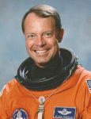

Lyndon B. Johnson Space Center
Houston, Texas 77058
|
National Aeronautics and Space Administration Lyndon B. Johnson Space Center Houston, Texas 77058 |
 |
Biographical Data |
||
L. Blaine Hammond, Jr. (Colonel, USAF, Ret.)
NASA Astronaut (former)
PERSONAL DATA: Born January 16, 1952, in Savannah, Georgia, but considers St. Louis, Missouri, as his hometown. Son, Michael Blaine. He enjoys tennis, golf, racquetball, squash, snow skiing, sailing, and scuba diving.
EDUCATION: Graduated from Kirkwood High School, Kirkwood, Missouri, in 1969; received a bachelor of science degree in engineering science and mechanics from the U.S. Air Force Academy in 1973, and a master of science degree in engineering science and mechanics from Georgia Institute of Technology in 1974.
ORGANIZATIONS: Member of the Air Force Academy Association of Graduates, Air Force Association, and the Order of Daedalians.
SPECIAL HONORS: Distinguished Graduate USAF Academy, Commander’s Trophy, and Flying Training Award in Undergraduate Pilot Training. Defense Superior Service Medal, 2 NASA Space Flight Medals, 2 Air Force Commendation Medals.
EXPERIENCE: Hammond received his pilot wings at Reese Air Force Base, Texas, in 1975. He was assigned to the 50th Tactical Fighter Wing 496th Tactical Fighter Squadron, Hahn Air Base, Germany, flying the F-4E from 1976 to 1979. In 1979-1980, he was an Instructor Pilot in the F-5B/E/F at Williams Air Force Base, Arizona, training a variety of foreign national students. He attended the Empire Test Pilot School (ETPS) at A&AEE Boscombe Down, United Kingdom, in 1981. Hammond returned to Edwards Air Force Base, California, in 1982, where he managed several projects in the 6512 Test Squadron until being assigned as an instructor at the USAF Test Pilot School. As a test pilot school instructor, he flew the F-4/A-7/A-37, and was the High Angle of Attack program monitor, teaching stall/spin theory and flight training.
He has logged over 4,500 hours in 15 American and 10 RAF aircraft.
NASA EXPERIENCE: Selected by NASA in May 1984, Hammond became an astronaut in June 1985, and is qualified for assignment as a pilot/commander on future Space Shuttle flight crews. His technical assignments include having served in Mission Control as an ascent/entry spacecraft communicator (CAPCOM). In that capacity he was directly involved in the decision-making process for flight rules, procedures, techniques, and launch commit criteria. He was also assigned as an Astronaut Support Person (ASP), or "Cape Crusader," responsible for monitoring Orbiter status as it undergoes testing and maintenance at KSC during preparations for the next flight. Hammond also served as the lead astronaut supporting the Shuttle Avionics Integration Laboratory (SAIL) which tests and verifies the flight software for each Shuttle mission. Hammond was the lead astronaut supporting Orbiter software development and changes, including the Global Positioning Satellite (GPS) avionics upgrade. He also worked on designing new cockpit flight instruments/systems displays for the Multifunctional Electronic Display System (MEDS), a major cockpit upgrade to electronic display systems.
Following STS-64, Hammond completed 5 months of intensive Russian language training as preparation for assignment as the Deputy for Operations, Russia. That assignment was subsequently changed to NASA Liaison to USAF HQ/AFSPC, Colorado Springs, where he worked several issues to strengthen ties between NASA, AFSPC, and USAF Astronauts. Hammond was also assigned as Lead Ascent/Entry CAPCOM for missions STS-73 through STS-78. During the same period, Hammond served as the Branch Chief of the Flight Support Branch, supervising CAPCOM and ASP activities. Hammond also served as Branch Chief of the Astronaut Office Safety Branch where he monitored all T-38, Shuttle, and Space Station safety issues.
A veteran of two space flights, Hammond has logged over 462 hours in space. He flew as pilot on STS-39 in 1991, and STS-64 in 1994.
Hammond left NASA in 1998.
SPACE FLIGHT EXPERIENCE: Colonel Hammond flew as pilot of Discovery on STS-39, the first unclassified Department of Defense mission (April 28 to May 6, 1991). He logged 8 days, 7 hours, 23 minutes of space flight. The seven-man crew performed numerous scientific experiments to collect data on atmospheric infrared and ultraviolet phenomena including a deploy and rendezvous in support of the Strategic Defense Initiative Office (SDIO).
He also was the pilot on STS-64 aboard the Space Shuttle Discovery. Mission highlights included: first use of lasers for environmental research; deployment and retrieval of a solar science satellite; robotic processing of semiconductors; use of RMS boom for jet thruster research; first untethered space walk in 10 years to test a self-rescue jetpack. Mission duration was 10 days, 22 hours, 51 minutes.
DECEMBER 1998
This is the only version available from NASA. Updates must be sought direct from the above named individual.
{kind=link}